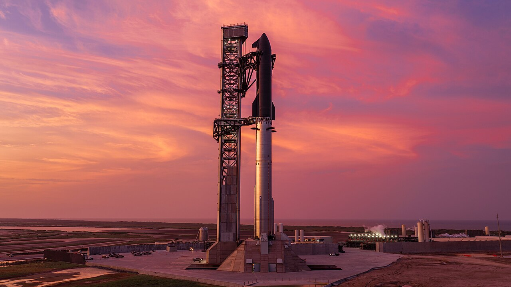

Vivo ora
Agenda, Starship e notizie in corso.

Foto: SpaceX
Sezione attiva
L'area SpaceX raccoglie la parte viva del sito: agenda dei lanci, storico Falcon, riuso dei booster e sviluppo Starship.
Dossier aperti sulle notizie in corso per questa compagnia. Aggiornati quando cambiano i fatti pubblici, non come comunicati ufficiali. L'archivio completo resta in Notizie.
SpaceX non viene trattata come una semplice azienda di lanci. Qui e il primo laboratorio della nuova industria spaziale: cadenza, costi, recupero, riuso, infrastrutture e sviluppo rapido nello stesso sistema.
Agenda, Starship e notizie in corso.

Storico dei lanci SpaceX, pad e mappa dei siti.

Storia narrata, monografie, analisi originali e guida per vedere un lancio.
Foto: 01 SpaceX · 02 U.S. Space Force · 03 SpaceX, CC BY 2.0
Anteprima dei T-0 piu vicini, ripulita dai voli gia avvenuti e allineata alla pagina agenda. Per finestre NET e fonti complete resta la sezione dedicata.
Falcon 9 Block 5
Space Launch Complex 4E, Vandenberg SFB, CA, USA
NROL-136 (Government/Top Secret)
Fifteenth batch of satellites for a reconnaissance satellite constellation built by SpaceX and Northrop Grumman for the National Reconnaissance Office to provide imaging and other reconnaissance capabilities.
T-0 attuale confermato da fonti ufficiali o affidabili.
Falcon 9 Block 5
Space Launch Complex 4E, Vandenberg SFB, CA, USA
USSF-266 (Government/Top Secret)
A classified mission for the United States Space Force. It is possibly a batch of classified LEO satellites based on SpaceX’s Starshield satellite bus, based on locations of ascent rocket stage drop zones being fits with previous SDA Transport Layer launches.
T-0 attuale confermato da fonti ufficiali o affidabili.
Falcon 9 Block 5
Space Launch Complex 4E, Vandenberg SFB, CA, USA
USSF-380 (Government/Top Secret)
A classified mission for the United States Space Force. It is possibly a batch of classified LEO satellites based on SpaceX’s Starshield satellite bus, based on locations of rocket stage drop zones being exact fits with previous Starlink Group 15 launches.
T-0 attuale confermato da fonti ufficiali o affidabili.